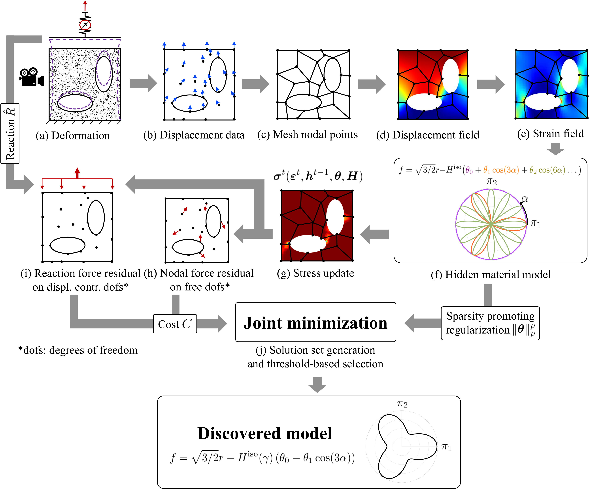
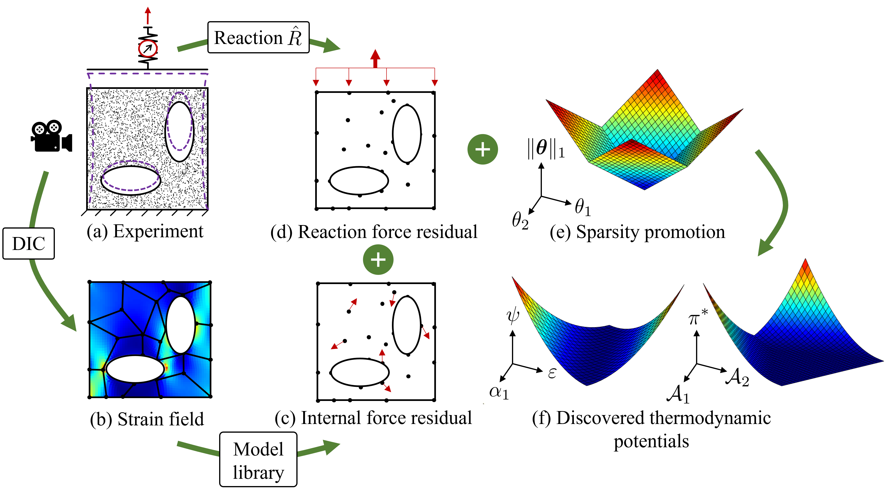

EUCLID (Efficient Unsupervised Constitutive Law Identification & Discovery) is here applied to discover path-dependent material behavior, i.e., elastoplastic material models and generalized standard material models.
Elastoplasticity

In a single experiment with complex geometry (a), point-wise displacements
(b) and global reaction forces (i) are measured. A quadrilateral finite element mesh is constructed (c) to interpolate the
displacement data. The resulting displacement field (d) is differentiated to arrive at the strain field (e). The material model
library (f) is constructed (here based on a Fourier ansatz). Based on this library and for given material parameters theta and H, the
stresses can be calculated by applying a classical elastic predictor - plastic corrector return mapping algorithm at each load step
in the data set, while the history variables are updated at each step (g). Based on the stresses, the internal and external virtual
works and hence the internal (h) and external (i) force imbalances are calculated, contributing to the cost function. Finally,
the cost function is minimized jointly with a sparsity promoting regularization term (j) to generate a set of solutions out of
which a solution with low cost and high parsimony is automatically selected.
Generalized standard materials

From a mechanical test on a specimen with complex shape (a), the strain field over the specimen surface is acquired using digital image correlation (DIC) (b)
, and the reaction force at the boundary is measured using a load cell.
Introducing a model library, the residuals of the weak form of linear momentum balance in the interior (c) and at the boundary (d) can be expressed as functions of the material parameters theta.
By minimizing the sum of squared residuals of the linear momentum balance along with a sparsity promoting regularization term (e),
the thermodynamic potentials (f) are discovered as parsimonious mathematical formulae.
About the documentation
The documentation contains detailed information for the most important functions (subroutines). For each function, the input arguments and output arguments are provided. The documentation can be browsed by using the search box. The provided examples help to understand the workflow of EUCLID, they can be executed using the provided codes and data.